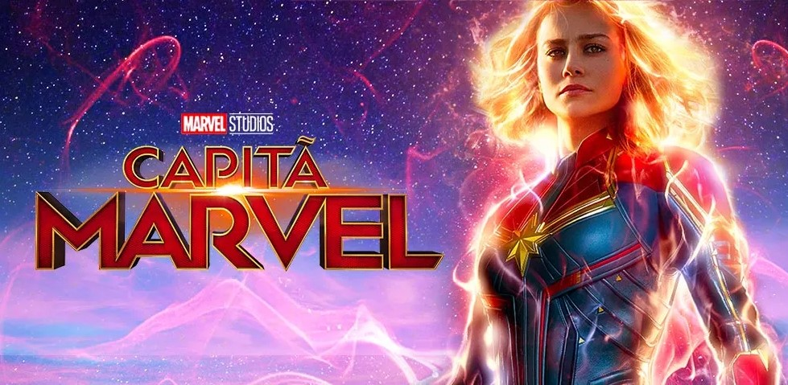
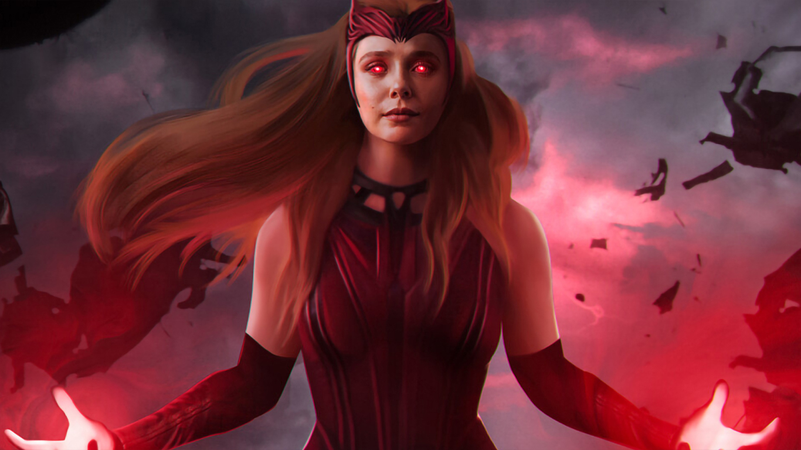
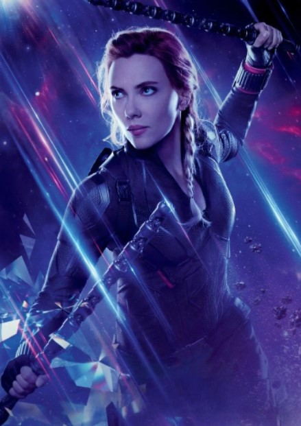

Principal || Home || Mulheres na TI || Marvel || Imagem || GitHub || CSS || Formulario || Imagem CSS || JavaScript ||

A Marvel Comics é uma editora norte-americana de mídias relacionadas. Hoje a Marvel Comics é considerada a maior editora de histórias em quadrinhos do mundo. Em 2009, a The Walt Disney Company, adquiriu a Marvel Entertainment, a empresa mãe da Marvel.
A Marvel Comics foi fundada por volta de 1930 e 1940 por Martin Goodman, com o nome de Timely Comics. Goodman, um editor de revistas pulp que começou a vender histórias de faroeste em 1933, expandiu suas atividades para um emergente - e até então bastante popular - mercado de revistas de histórias em quadrinhos originais.[4] Goodman começou a empresa na 330 West 42nd Street, New York City, New York. Ele detinha oficialmente os títulos de editor, editor-executivo e gerente de negócios, com Abraham Goodman ocupando oficialmente o cargo de publisher. A primeira publicação ocorreu em 1939, com o número 1 da revista Marvel Comics, onde se deram as primeiras aparições do super-herói Tocha Humana e do anti-herói Namor, o Príncipe Submarino. A equipe por trás desse sucesso de vendas veio de uma outra editora, a Funnies, Inc., mas no ano seguinte, a própria equipe da editora ocupou este posto. Com a segunda edição, o título da série mudou para Marvel Mystery Comics.
Capitã Marvel ||
Feiticeira Escarlate ||
Viúva Negra
Algumas personagens femininas da Marvel
Carol Susan Jane Danvers é uma super-heroína fictícia que aparece nos quadrinhos americanos publicados pela Marvel Comics. Criado pelo roteirista Roy Thomas e pelo desenhista Gene Colan, Danvers apareceu pela primeira vez como uma oficial da Força Aérea dos Estados Unidos e colega de Mar- Vell, super-herói da raça Kree, em Marvel Super-Heroes #13 (março de 1968). Mais tarde, Danvers tornou-se a primeira personagem a usar a alcunha Ms. Marvel em Ms. Marvel #1 (janeiro de 1977) depois que seu DNA foi fundido com o de Mar-Vell durante uma explosão, dando-lhe poderes sobre-humanos. Estreando na Era de prata das histórias em quadrinhos americanas, a personagem foi caracterizada em uma série solo no final dos anos 1970, antes de se associar com as equipes de super-heróis, Os Vingadores e X-Men. A personagem também é conhecido como Binária, Warbird e Capitã Marvel em vários pontos de sua história. Nos últimos tempos, Danvers foi rotulada como "a maior heroína da Marvel" e "possivelmente "membro dos Vingadores mais poderoso da Marvel". Em 2012, a encarnação de Danvers da Ms. Marvel foi a personagem feminina mais bem classificada (na 11ª posição) na lista do IGN dos "50 Maiores Vingadores".

Poderes Binários:
Como Binário, Carol já esteve ligada ao poder de um buraco branco e foi capaz de gerar calor, luz, radiação e acessar todas as outras formas de energia ao longo do espectro eletromagnético em uma escala quase solar. Ela também tinha pouco controle sobre a gravidade. Ela podia respirar no espaço e viajar à velocidade da luz. Acreditava-se que o elo fosse cortado, portanto ela não podia mais fazê-lo no nível que já tivera. No entanto, Carol provou que ainda retinha a capacidade para esse poder, pois ainda permanece a capacidade de se conectar com os buracos brancos à vontade dentro dela.
Habilidades Físicas Aprimoradas:
Feiticeira Escarlate(Scarlet Witch)
Carol Susan Jane Danvers é uma super-heroína fictícia que aparece nos quadrinhos americanos publicados pela Marvel Comics. Criado pelo roteirista Roy Thomas e pelo desenhista Gene Colan, Danvers apareceu pela primeira vez como uma oficial da Força Aérea dos Estados Unidos e colega de Mar- Vell, super-herói da raça Kree, em Marvel Super-Heroes #13 (março de 1968). Mais tarde, Danvers tornou-se a primeira personagem a usar a alcunha Ms. Marvel em Ms. Marvel #1 (janeiro de 1977) depois que seu DNA foi fundido com o de Mar-Vell durante uma explosão, dando-lhe poderes sobre-humanos. Estreando na Era de prata das histórias em quadrinhos americanas, a personagem foi caracterizada em uma série solo no final dos anos 1970, antes de se associar com as equipes de super-heróis, Os Vingadores e X-Men. A personagem também é conhecido como Binária, Warbird e Capitã Marvel em vários pontos de sua história. Nos últimos tempos, Danvers foi rotulada como "a maior heroína da Marvel" e "possivelmente "membro dos Vingadores mais poderoso da Marvel". Em 2012, a encarnação de Danvers da Ms. Marvel foi a personagem feminina mais bem classificada (na 11ª posição) na lista do IGN dos "50 Maiores Vingadores".

Poderes Binários:
A Feiticeira Escarlate é uma humana aprimorada. Inicialmente, seu poder era a manipulação de probabilidades, criando eventos surreais que não tinham muitas chances de acontecer sozinhos. Ela é capaz de desviar objetos e ataques, gerar combustão instantânea ou enferrujar metais, além de outros eventos improváveis; com isso, ela pode alterar a realidade atual de tudo o que se passa e que ela pode ver. Mais tarde, seus poderes evoluíram para níveis catastróficos, quando Wanda demonstrou-se capaz de controlar a Energia do Caos (uma das formas mais poderosas de energia) através da Magia do Caos, que ela pode usar para ignorar as leis da física e do espaço-tempo, além de ter sido uma fonte de poder que ela utilizou para alterar toda a realidade, como fez na Dinastia M. Wanda é tão poderosa que é capaz de ressuscitar os mortos, como fez com seu irmão Pietro e Magnum; pode apagar seres da existência ou criar seres a partir do nada (como fez com seus respectivos filhos); além de ser capaz de roubar pedaços da alma de Mephisto, o lorde supremo do submundo. Durante o evento da Cruzada da Inocência, é dito que seu poder é capaz de feitos infinitos e inimagináveis, tanto que Dr. Destino cobiçou tal poder. Além disso, ela também possui ensinamentos da Magia de nível Ômega avançado, ensinados por Dr. Estranho e sua tutora Agatha Harkness, sendo capaz de levitar, teletransportar-se, gerar campos de força, canalizar sua energia para provocar explosões, manipular mentes de várias pessoas, prever acontecimentos próximos (precognição), criar seres sobrenaturais, entre várias outras habilidades, dando-lhe um leque de poderes inimagináveis aos seus feitiços altamente poderosos.
Viúva Negra (Natasha Romanoff)
A Viúva Negra (em inglês: Black Widow), alter-ego de Natasha Romanoff, é uma personagem das histórias em quadrinhos do Universo Marvel publicado pela Marvel Comics. Nascida na União Soviética, Natalia Alianovna Romanova (em russo: Наталия Альяновна Романова) foi criada por Stan Lee (edição), Don Rico (roteiro) e Don Heck (desenhos). A personagem apareceu pela primeira vez em Tales of Suspense (abril de 1964) e foi introduzida pela primeira vez como uma espiã russa, antagonista do super-herói Homem de Ferro. Mais tarde ela fugiu para os Estados Unidos, tornando-se uma agente da S.H.I.E.L.D. e membra da equipe de super-heróis Vingadores.
A atriz Scarlett Johansson interpretou a personagem em nove filmes do Universo Cinematográfico Marvel, começando por Homem de Ferro 2 (2010) e incluindo um filme solo, Viúva Negra (2020).

Poderes e Habilidade:
A Viúva Negra foi aprimorada pela biotecnologia que torna seu corpo resistente ao envelhecimento e doenças e cura acima da taxa humana; bem como o condicionamento psicológico que suprime sua memória de eventos verdadeiros em oposição aos implantados do passado sem o auxílio de drogas supressoras de sistema especialmente projetadas.
Os glóbulos brancos em seu corpo são eficientes o suficiente para lutar contra qualquer micróbio, corpo estranho e outros de seu corpo, mantendo-a saudável e imune à maioria, senão a todas as infecções, doenças e distúrbios.
Sua agilidade é maior do que a de uma medalha de ouro olímpica. Ela pode coordenar seu corpo com equilíbrio, flexibilidade e destreza facilmente.
Romanoff tem um intelecto talentoso. Ela exibe uma afinidade fantástica com a manipulação psicológica e pode mascarar suas emoções reais perfeitamente. Como Steve Rogers e Clint Barton, ela possui a capacidade de processar rapidamente vários fluxos de informações (como avaliação de ameaças) e responder rapidamente às mudanças nas situações táticas.
A Viúva Negra é uma atleta de classe mundial, ginasta, acrobata, trapezista capaz de numerosas manobras e feitos complexos, sendo uma artista marcial especialista (incluindo jiu-jitsu, aikido, boxe, judô, caratê, savate, ninjutsu, múltiplos estilos de kung fu e kenpō, bem como a arte marcial russa (sambo), Romanoff também é uma atiradora e especialista em armas, além de ter extenso treinamento em espionagem. Ela também é uma bailarina talentosa.
Romanoff é uma estrategista especialista. Ela é uma estrategista tática e comandante de campo muito eficaz. Ela liderou os Vingadores e até a S.H.I.E.L.D. em algumas ocasiões.